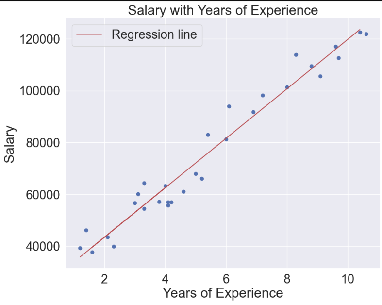

Salary Patterns with Linear Regression
04 Dec 2023In this blog post, we’ll look into a salary dataset and employ linear regression to understand the relationship between years of experience and salary. Linear regression in machine learning is a supervised learning algorithm used for predicting a continuous outcome variable based on one or more input features. It establishes a linear relationship between the input features and the target variable by finding the best-fitting line through the data points.
The Dataset
Our dataset contains 30 entries of our two variables, Years of experience and Salary. Let’s load the dataset.
df = pd.read_csv('Salary_dataset.csv')
df.head()

We’ll clean our data by dropping unnecessary columns and checking for missing or duplicated values.
# Drop the 'Unnamed: 0' column
df.drop('Unnamed: 0', axis=1, inplace=True)
# Check for Null values
df.isna().sum()
# Check for Duplicated values
df.duplicated().sum()
Exploratory Data Analysis (EDA)
To gain insights into the dataset, we’ll compute correlations and create visualizations, such as pair plots and scatter plots.
# Compute the correlation matrix
correlation_matrix = df.corr()
sns.set(font_scale=2)
sns.pairplot(df, height=8, aspect=10/8)

ML Models
1.Linear Regression
Now, it’s time to build our linear regression model. We’ll split the data into training and testing sets, create the model, and fit it to the training data.
# Prepare the data
x = df['YearsExperience'].values.reshape(-1, 1)
y = df['Salary'].values.reshape(-1, 1)
# Split the data into training and testing sets
x_train, x_test, y_train, y_test = train_test_split(x, y, test_size=0.15)
# Create a linear regression model
lr = LinearRegression()
# Fit the model to the training data
lr.fit(x_train, y_train)
Visualization of Regression Line
Visualizing the regression line on our scatter plot will help us understand how well our model fits the data.
# Visualize the regression line
plt.scatter(x, y)
plt.xlabel("Years of Experience")
plt.ylabel("Salary")
plt.plot(x_test, lr.predict(x_test), color="r", label="Regression line")
plt.title("Salary with Years of Experience")
plt.grid(True)
plt.legend()
plt.show()

Model Evaluation
To assess the performance of our model, we’ll calculate key metrics such as mean absolute error, mean squared error, and R-squared.
# Make predictions on the test set
y_preds = lr.predict(x_test)
# Evaluate the model
print("Mean Absolute Error =", mean_absolute_error(y_test, y_preds))
print("Mean Squared Error =", mean_squared_error(y_test, y_preds))
print("R-squared =", r2_score(y_test, y_preds))
Upon evaluation,
Mean Absolute Error = 3856.3599427002528
Mean Squared Error = 19646866.89869981
R-squared = 0.9794041289245915
Conclusion
In conclusion, our exploration into the salary dataset using linear regression has provided valuable insights into the relationship between years of experience and salary.
Source: linear-regression